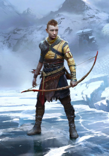
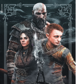

Breve Historia de kratos

Faye, fue la esposa de kratos. Ella, al igual que el, era una guerrera. El fruta de la relacion fue su hijo Atrus. Lastimosamente termino muriendo.

Atreus es el hijo de Kratos y Faye. Mientras Faye vivia el siempre estaba con ella, ella le enseño todo lo que sabia, hasta el punto de no tener relacion con su padre, Kratos. Pero a partir de la muerte de su madre, el chico empezo a estar mas unido a su padre, demostrandose al final de la aventura....que les deparara el Ragnarok

Traicionara atraus a su padre en el Ragnarok? O será un plan para evitar el mismo?